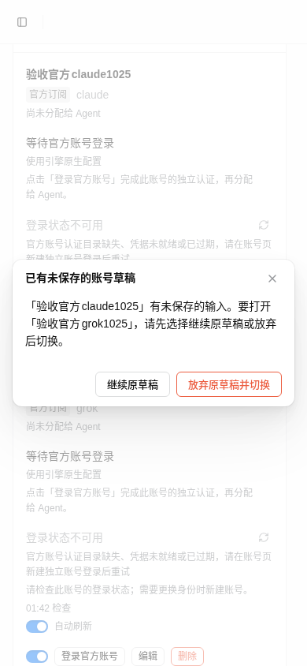
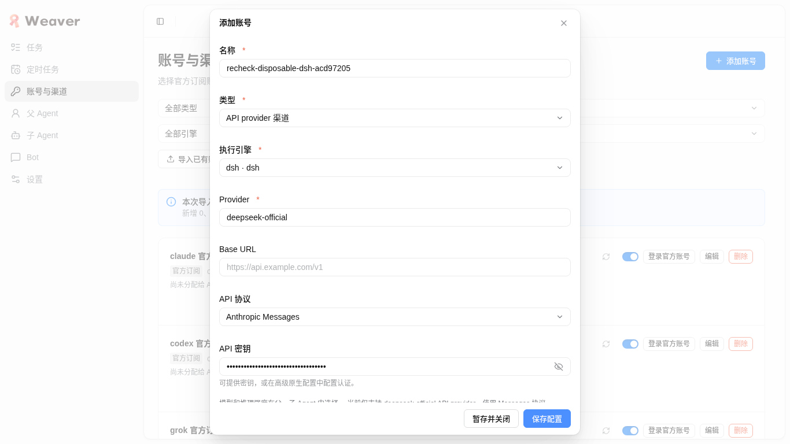
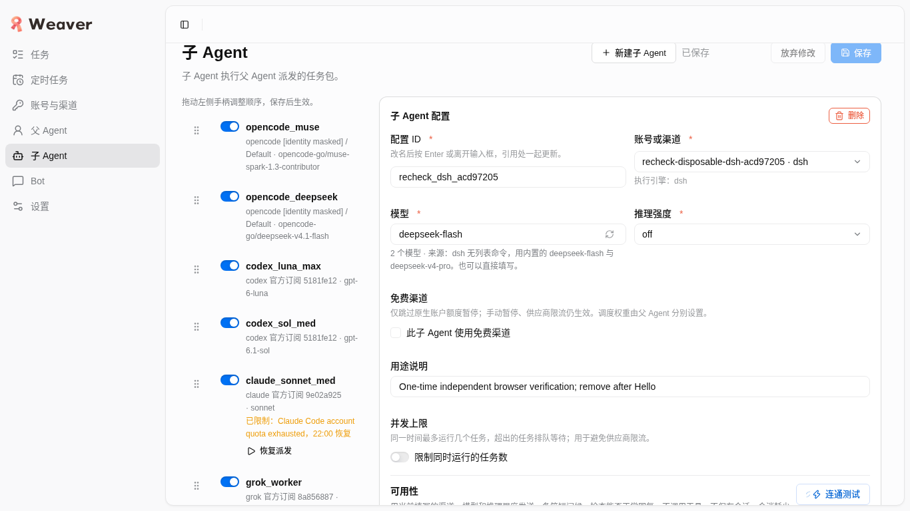
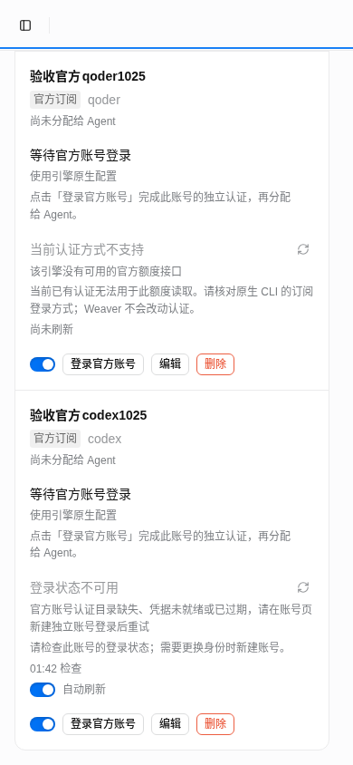
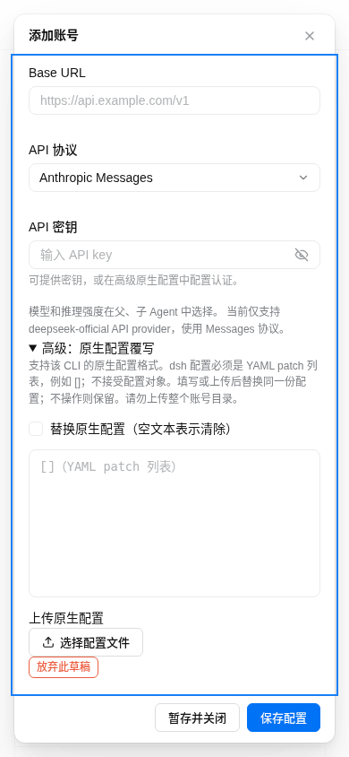
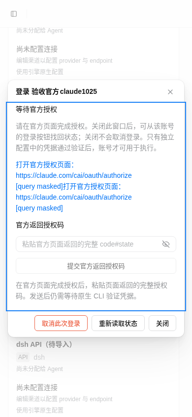
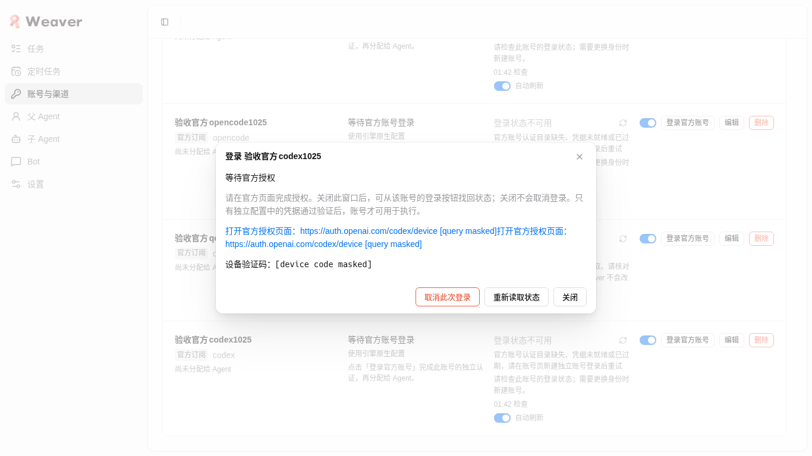
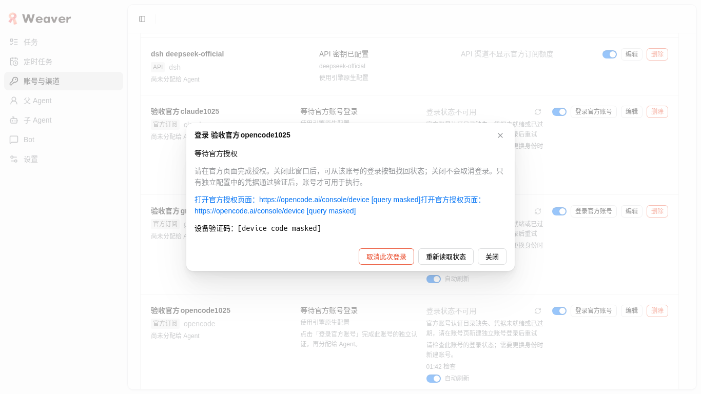

Weaver真实账号：冻结版独立复验
环境已就绪；整体未通过。 本包修复路径复验通过；独立首次导入仍有2项FAIL，5种新官方OAuth完整授权为MISSING。不是全Weaver所有功能通过。
测试地址 http://127.0.0.1:4738/#/channels。应用0.7.9，生产4737与持久test均保留。生成时间 2026-10-25T05:52:53.911081+00:00。
冻结摘要 1c092161ceed7008012cdf22548f919e919033dc24d6df0601ed867be7117f88，291文件进出场核对；test PID1299907、startedAt 2026-10-25T05:29:26.659Z保持一致。版本与归属 · 机器结果 · 保留首轮失败报告
实际步骤与结论
未解决的问题与覆盖边界
首次导入不能放行：无可用token的Claude来源显示新增而未就绪；首次全部导入超过UI15秒期限后才提交。专项服务4740已停止，数据与过程由独立worker回收，最终安全报告保留首次/重复/旧snapshot的区别。本包4738上的existing结果不替代这两条失败。
- 没有完整OAuth本人授权、五种新身份远端执行证明；Qoder BYOK/license未验，Pi/dsh无官方选项。
- 未重复首轮额度刷新/启停/删除引用保护/完整新API矩阵；旧证据仅代表首轮时点。
- 无所有引擎正式worker、owner/IM/定时推理全链路或长期多组织续期验收。
- Claude非法code未直接追踪stdin；真实拒绝与job状态加当前源码前置校验表明未进入write分支。
- 初次脚本在取消异步回收完成前找重试按钮，属于harness同步问题，已等待按钮后复验。
- 一次滚动聚焦误点真实Claude链接，诊断tab-list工具输出含临时公开OAuth query/state；立即关闭额外tab，最终产物无query/token/code，未替本人授权。不能宣称整个工具轨迹从未显示query。
- 原Claude额度block未解除；最终release_at比revision36少705ms，其他归属/原因/起点相同，未独立追踪该时间差生成者。
工程检查由owner运行：2145 pass / 32 skip / 0 fail，typecheck/build通过；安全回执。它不替代UI验收。原生dsh合法[]本轮实际调用成功；此前其他引擎调用见分时点证据，其中OpenCode限额与Pi无凭据仍非推理通过。
控制台/网络仅保存安全元数据，预期400与page error分开：runtime-health.json · login-safe-network.json · same-key-regression.json。Chrome导航后的console buffer不能替代完整早期日志；同key回归另在精确操作后立即核对为0。
最小安全截图
截图前先观测未脱敏DOM的几何/可用性；仅截图时遮盖邮箱、完整OAuth query及设备码，随后恢复DOM。截图的脱敏文字可能改变换行，scroll/rect结论以未遮盖前的JSON为准。未归档HAR、请求正文、原生raw输出或授权码。报告可读性检查不算产品验收。报告文件/打印/链接核对

窄屏草稿归属确认
dsh拒绝{}并保留输入
一次性新API真实hi
窄屏末行
窄屏长表单底部
Claude手工输入窗，query已DOM脱敏
最终Codex待本人授权入口，验证码已DOM脱敏
OpenCode设备入口，验证码已DOM脱敏资源闭环与本人授权移交
一次性role先于API删除，secret/root已无；原账号/owner/worker元数据与revision36逐项相同。所有本包登录scope在最终Codex前已回收。生产与持久test不停止。逐项保留核对 · 最终资源回执。
Codex可用待授权入口已保留：账号 验收官方codex1025 / channel_bce8566b32d34b089fb9191d；job 3801d09c-8248-4472-adf8-3ce0203520be；设备码可见且与后端一致（不归档码）；截止 2026-10-25T06:02:40.390000+00:00。本人打开4738账号页，点此账号登录按钮，打开官方链接并在官方页面输入UI设备码。关闭本任务Chrome不会取消服务器job；超时或精确取消回收自有scope。安全移交详情
{
"serviceOwnership": "Borrowed persistent test 4738 / dev-weaver-real-accounts.scope; production weaver.service preserved. No prepare, cleanup, stop or restart.",
"browser": {
"session": "weaver-accounts-recheck",
"mode": "owned Google Chrome task profile",
"closed": true,
"profileRemoved": true,
"ownedBrowserPids": [],
"remainingProfileProcesses": []
},
"disposable": {
"roleAbsent": true,
"channelAbsent": true,
"originalChannelStillPresent": true
},
"privateAncestors": [
{
"path": "/home/mocha/.local/share/weaver-real-test",
"mode": "0o700"
},
{
"path": "/home/mocha/.local/share/weaver-real-test/channels",
"mode": "0o700"
},
{
"path": "/home/mocha/.local/share/weaver-real-test/channels/channel_4ced3727a61348b390af7c6f",
"mode": "0o700"
},
{
"path": "/home/mocha/.local/share/weaver-real-test/channels/channel_bce8566b32d34b089fb9191d",
"mode": "0o700"
},
{
"path": "/home/mocha/.local/share/weaver-real-test/channels/channel_24fae3142b5c48f898448d0a",
"mode": "0o700"
},
{
"path": "/home/mocha/.local/share/weaver-real-test/channels/channel_90504ac6dfee41019ebc3fc0",
"mode": "0o700"
},
{
"path": "/home/mocha/.local/share/weaver-real-test/channels/channel_40c15c208bf84e45911b2b95",
"mode": "0o700"
}
],
"finalCodex": {
"status": "authorizing",
"handoff": "pending-auth.json",
"reference": {
"channel": "channel_bce8566b32d34b089fb9191d",
"id": "3801d09c-8248-4472-adf8-3ce0203520be"
},
"scope": "dev-weaver-channel-login-c028bb13-2c0f-4798-a53c-e6898dc48f05.scope",
"pid": 1350045,
"ownerUid": 1000,
"deadlineUtc": "2026-10-25T06:02:40.390000+00:00",
"reason": "Preserved exclusively for person authorization; no inference",
"nativeProcessesStillPresent": true
},
"testServer": {
"pid": 1299907,
"url": "http://127.0.0.1:4738",
"port": 4738,
"dataDir": "/home/mocha/.local/share/weaver-real-test",
"version": "0.7.9",
"startedAt": "2026-10-25T05:29:26.659Z",
"runningWorkers": 0,
"managedBy": null
},
"productionPid": 1109320,
"otherOfficialLoginProcessesAbsent": true,
"scratchCleanup": "Only safe scripts and JSON remain; own profile removed. Print PDF/text/render intermediates removed after actual readability checks. No raw auth/HAR/body/native logs archived."
}账号合同 · 持久测试环境说明